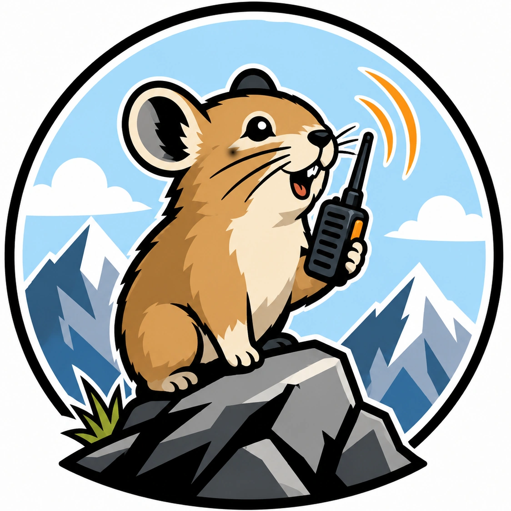

PIKAwave
open-source handheld communicator
Pika is a handheld radio — somewhere between push-to-talk and voice messages. Radios reach each other directly: no towers, no network, no phone. Talk in near real time, or leave a message for later. Anything you receive can be played back as many times as you want.
It works on sub-1 GHz bands with LoRa modulation, uses MELPe for voice compression, and runs on an STM32H7. Traffic is end-to-end encrypted with X25519 and AES-256, and each radio only accepts messages from contacts you have added to it. A built-in GNSS receiver lets you share your position.
Two radios are planned. Pika Go is the full version: rugged and sealed against snow and water, for travel and outdoor sport. Pika Lina — from the Italian piccolina, little one — is for kids: smaller, lighter, cheaper and simpler.
Battery life is a target of its own: a few days of active use, or weeks on standby.
Plan and progress
- PCB design for the first prototype: Pika Go 0
- Minimal UI: LCD driver and buttons
- LoRa modem driver
- Microphone input (ADC) and speaker output (DAC)
- On-device MELPe voice encoding and decoding
- Draft application protocol
- Full UI: screens, menus and settings
- Message store and replay
- Low-power mode when idle
- Enclosure design
- Field test at real distances
- X25519 key exchange and AES-256 transport frames
- Contact management
- GNSS position sharing
- Contact sharing
- Group channels
Getting involved
Any help is welcome, hardware or software: boards, firmware, codecs, enclosures, or a second radio for field testing. Write to chirp@pikawave.org and say what you would like to work on.